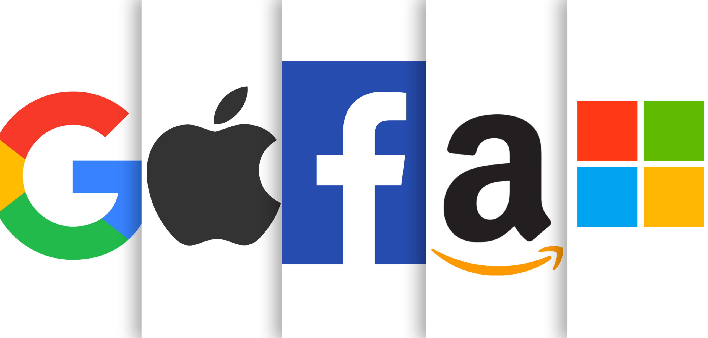
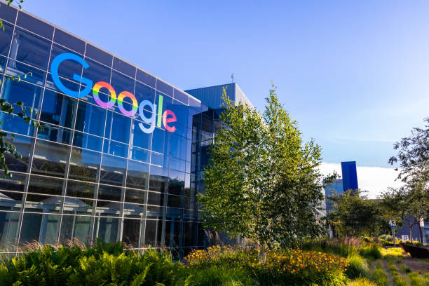
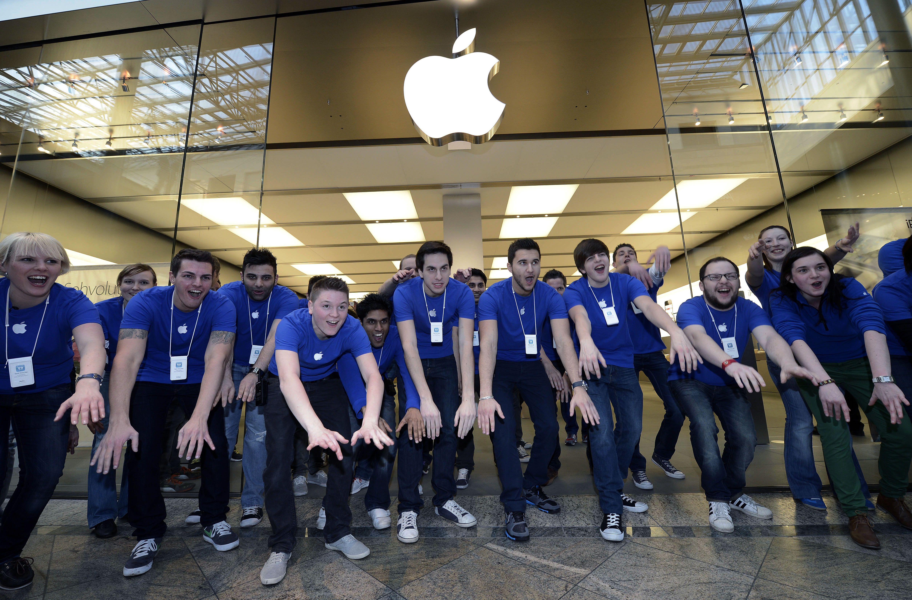
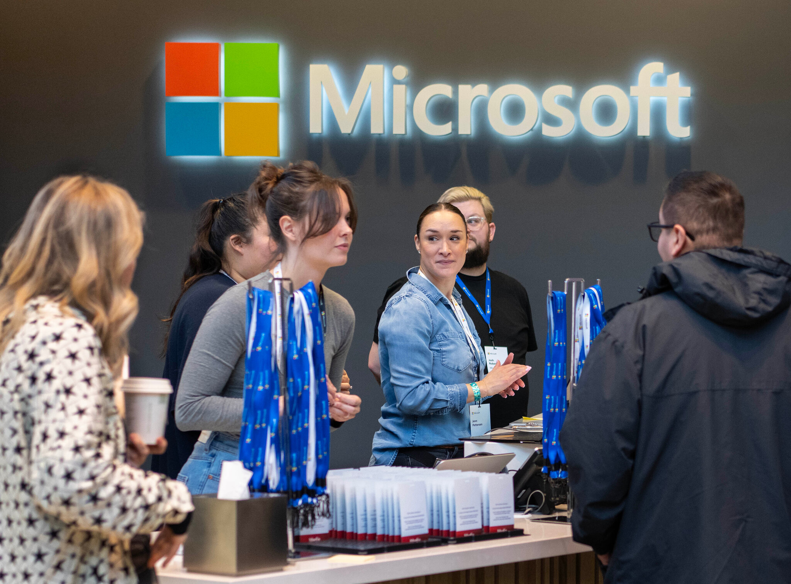
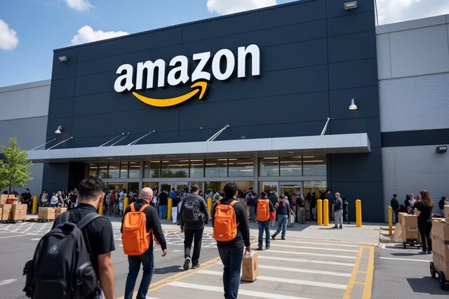
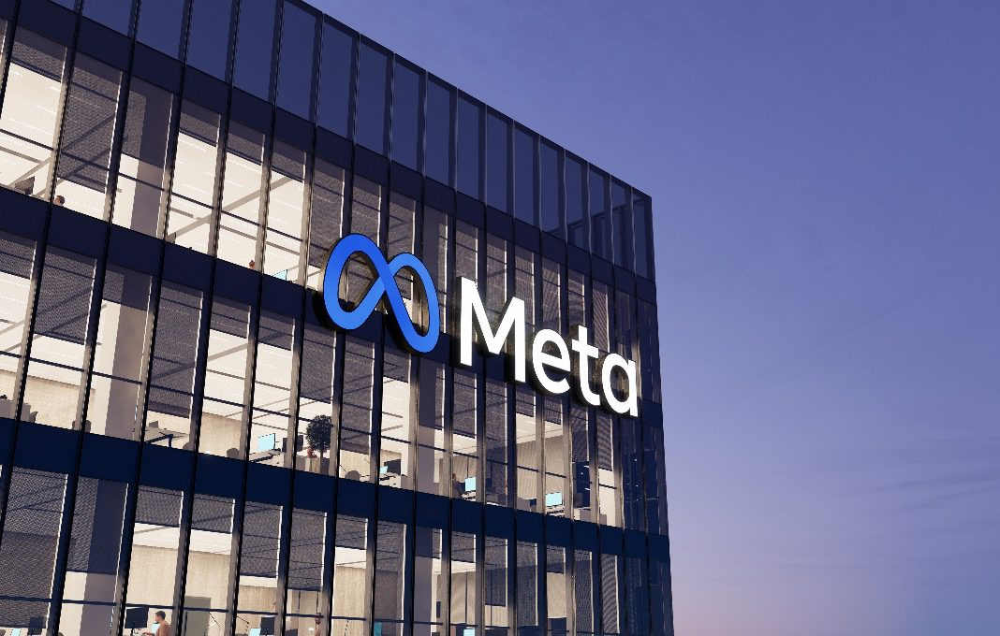

|  | The term "tech giants" refers to globally influential companies that dominate the technology sector through groundbreaking innovations, immense market capitalization, and a profound impact on society. Prominent tech giants include Google ( Alphabet), Apple, Microsoft, Amazon, and Meta (formerly Facebook). These companies have redefined industries, set benchmarks for workplace culture, and shaped the digital age. |
|---|
|  | Google’s mission is “to organize the world’s information and make it universally accessible and useful.” The company values innovation, collaboration, and a user-first approach, fostering creativity and curiosity in its workforce. Known for its vibrant campuses like the Googleplex, Google emphasizes open spaces, collaboration and employee well-being. Perks include free gourmet meals, on-site gyms and even nap pods. Google encourages innovation through programs like "20% time," allowing employees to dedicate a portion of their workweek to passion projects, many of which lead to groundbreaking products like Gmail. Employees enjoy comprehensive benefits, including generous parental leave, wellness programs, and professional development initiatives |
AppleApple’s mission is to “bring the best user experience to its customers through innovative hardware, software, and services.” Their core values include simplicity, design excellence, and relentless focus on quality. Apple fosters a high-performance culture, characterized by secrecy and intense collaboration. Apple Park, its headquarters, is designed to encourage serendipitous encounters and creative teamwork. Apple operates with a "design-first" philosophy, focusing on building seamless user experiences and pushing the boundaries of technology. Apple offers competitive salaries, discounts on Apple products, stock options and comprehensive health benefits, along with programs supporting employee education and career growth. |
 |
|  | MicrosoftMicrosoft is committed to empowering every person and every organization on the planet to achieve more. Their values emphasize inclusivity, learning, and technological impact. Microsoft promotes a growth mindset and collaboration. Employees are encouraged to pursue continuous learning and the company offers flexible working conditions, including hybrid work options. Microsoft fosters innovation through experimentation and research, investing heavily in areas like AI, cloud computing and quantum computing. Benefits include extensive healthcare coverage, family care support, education reimbursement and time off for volunteer work through their Employee Giving Program. |
AmazonAmazon’s mission is to be “Earth’s most customer-centric company.” The company values customer obsession, ownership, and a bias for action. Amazon is known for its fast-paced, results-oriented environment. While demanding, the company provides opportunities for growth and career advancement. Amazon fosters innovation through a culture of experimentation, as seen in initiatives like Amazon Prime and AWS. Employees are encouraged to think big and take calculated risks. Amazon offers upskilling programs like Career Choice, where employees can learn new skills. Other benefits include competitive pay, health coverage and parental leave policies. |
 |
|  | MetaMeta’s mission is “to give people the power to build community and bring the world closer together.” Core values include openness, connection and innovation. Meta’s work environment is collaborative and creative, with a focus on employee well-being. The company offers flexible work options and fosters an inclusive culture. Meta invests heavily in emerging technologies like virtual reality and AI, encouraging employees to work on transformative projects aligned with the company’s vision for the metaverse. Employee benefits include generous parental leave, wellness stipends and support for remote work. Meta also provides learning resources and mentorship programs to support career growth. |